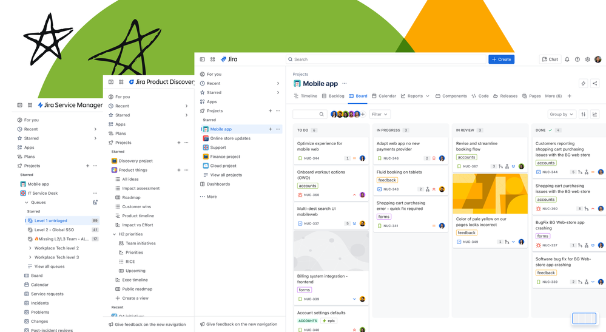
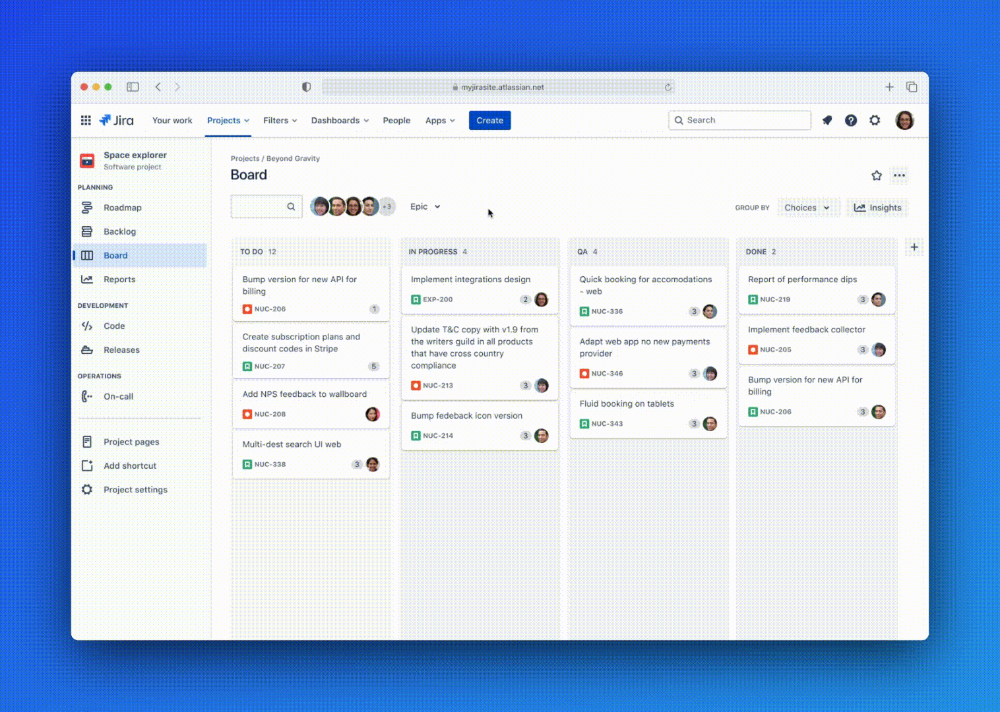
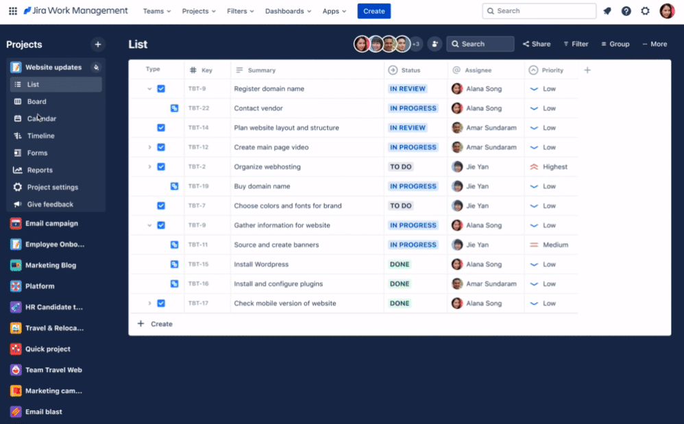
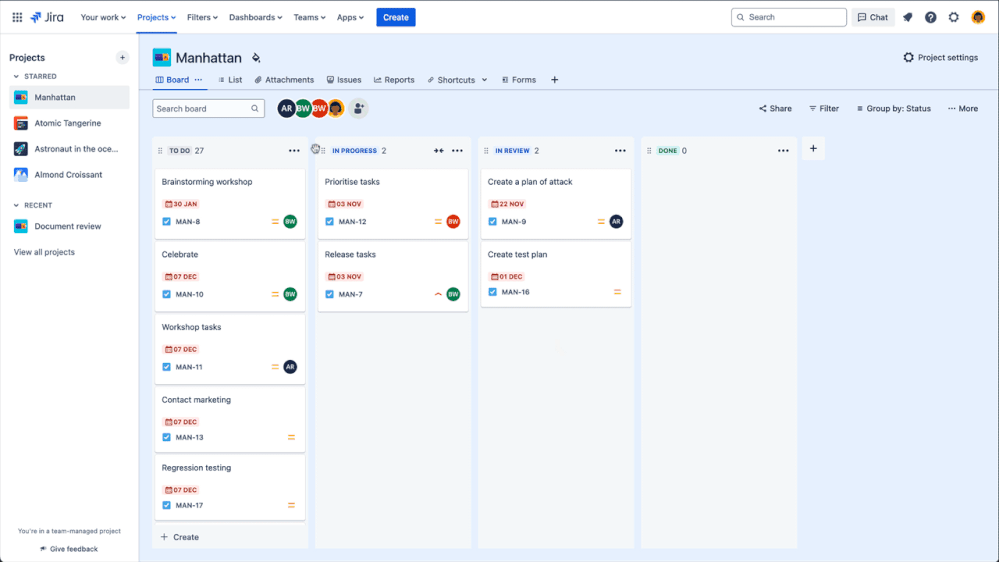
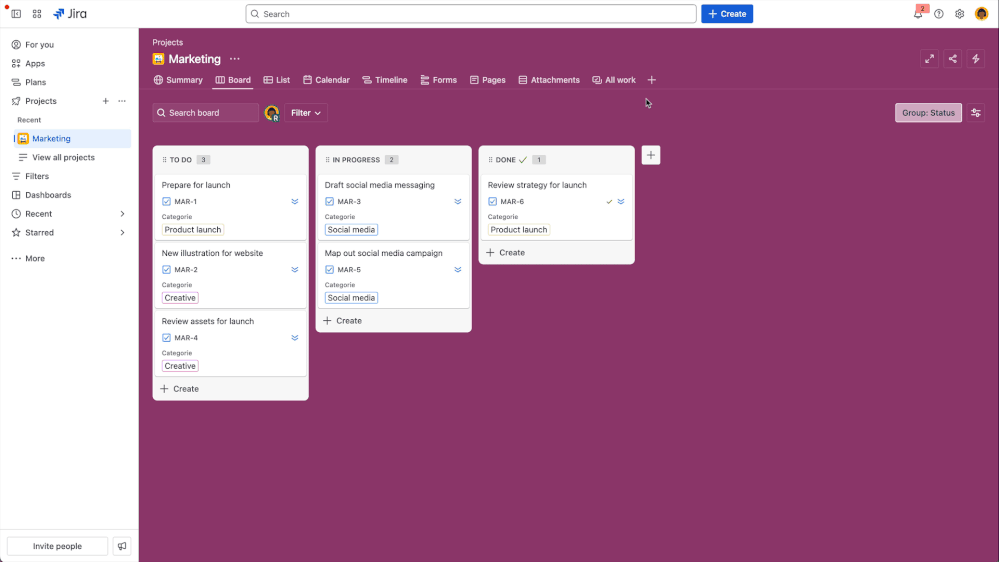
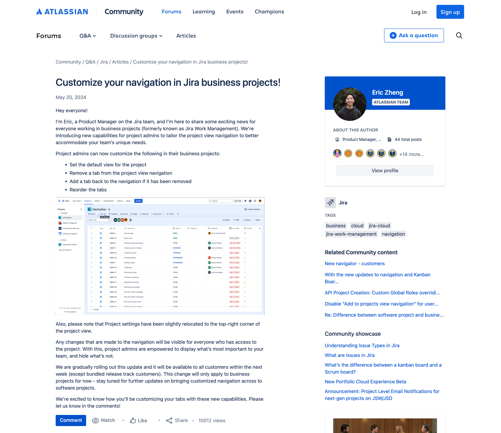

Custom Views
How a navigation refresh became the foundation for navigation patterns across all of Jira.
In the competitive project management landscape, Jira's limited view customisation was a deal breaker for business teams. I led a three-phase strategic overhaul that transformed a rigid, cluttered interface into a flexible navigation system. This work unblocked critical features like Saved Views, directly helped 50,000+ users land on their preferred view, and established a new horizontal navigation standard adopted across all of Jira.

Overview
The Jira Work Management project navigation exposed up to 14 menu items in a static left-hand sidebar. Users couldn't reorder, hide, or customise them in any way and there was no mechanism for teams to share a consistent view of their project. I led the design of a two-part solution: first, replacing the sidebar with a horizontal tab system that admins could curate; then building saved views on top of that foundation so teams could persist and share their preferred view configurations.
The challenge
Jira Work Management projects could surface up to 14 different tabs in the sidebar, yet users had no way to customise them. The interface was static, verbose, and built for every user situation, but ultimately served no one effectively. For example, only 4% of unique users ever clicked the "shortcuts" tab, meaning roughly 365,000 users per week were seeing a tab they had no use for. And with new capabilities like Approvals on the roadmap, the navigation had no room to grow.
"I'd be curious if it would be customisable to remove any one of these or add other ones into it. So, this could be fully customised. [I'd probably remove] goals and pages, forms… approvals probably would remove, not necessarily needed."
SEQ baseline research confirmed what feedback channels had been signalling for years: the cluttered UI hindered users from completing basic tasks with confidence, contributing to approximately 43% of churn being attributed to usability problems. Additionally, because there was no mechanism to share a consistent view, team members often landed on different default views than their project leads, forcing teams into inefficient, manual "back-and-forth" sessions just to align on what they were looking at. This lack of flexibility affected 670,000 Monthly Active Users (MAU) and was the 5th most-upvoted request on Jira.
"We have to sit next to each other and check how the other has set the list view and copy it manually."
Beyond the immediate UX debt, the problem had a second dimension. Without a customisable navigation, there was no viable path to future capabilities like multiple views, targeted templates, or project-level persistence.
usability problems
18 months are Team Managed
of view customisation
Process
Competitor analysis
To inform feature prioritisation and draw inspiration from the market, I audited how direct competitors — Asana, ClickUp, and Jira Product Discovery — had approached customisable navigation. This gave us a clear signal that admin vs. user level permissions were table stakes, and helped anchor our own permission model decisions.
| Feature | Asana | ClickUp | JPD |
|---|---|---|---|
| Hide / show tab | ✓ | ✓ | ✓ |
| Add multiple views | ✓ | ✓ | ✓ |
| Set a default view | ✓ | ✓ | ✓ |
| View favouriting | ✗ | ✓ | ✓ |
| Rename view | ✓ | ✓ | ✓ |
| Copy / duplicate view | ✓ | ✓ | ✓ |
| Reorder views | ✓ | ✓ | ✓ |
| Admin vs. user permissions | Set at view creation | Per-view permissions | Per-view permissions |
The North star
Before any phasing decisions were made, I designed a vision state so the team had a shared picture of where the navigation was heading. The delivery plan broke the vision into four sequential phases: multi-project sidebar, horizontal tabs, platform-wide adoption, and saved views.
Exploring project-level navigation in the left rail by managing multiple projects in one place.
Redesigning the sidebar into horizontal tabs. Shifting from vertical nav items to admin-curated horizontal tabs, simplifying the mental model and reclaiming vertical space. Shipped together with Phase 1 after customer feedback revealed the phased approach lacked enough context to make sense on its own.
The pattern's success led to its adoption by all Jira project types, requiring deep cross-team consistency work.
Building on the new navigation to introduce view configuration persistence — letting admins define and share a project default and configure multiple views.
The intention was to roll out each phase as it was built, giving customers continuous improvement without waiting for the full system. But without the 'North Star' context, our incremental changes felt like noise to our users. When complaints started coming in, I went directly to the source, conducting sessions with affected customers. I discovered that their friction wasn't about the new layout, it was change aversion fuelled by a lack of direction. Recognising that we were 'moving the cheese' without showing the new house, we changed tack. We merged the first two phases to launch a more complete experience, ensuring that the first time users saw the new navigation, they also saw the value of the customisation it unlocked.
Being such a pivotal change, I made sure to incorporate research in the form of usability testing to validate the design, and gather qualitative feedback to guide the prioritisation of features in each milestone.
The navigation shift
The first design direction explored bringing multiple projects into the static sidebar. It surfaced projects users had starred out of a top menu and let them switch between them without leaving the current context. An accordion pattern was used to display the menu items. This introduced flexibility, but also complexity: the sidebar became denser, and managing project-level vs view-level navigation in the same rail created cognitive overhead.
The sidebar menu design implied hierarchy, when the views were simply different ways to see the same project data. The move to horizontal tabs helped in reframing this mental model.



Before → after: vertical sidebar replaced with horizontal tabs
The horizontal tab pattern was validated quickly. 8,550 sites received customised navigation and the active site adoption rate grew by 2% week on week, accounting for approximately 7% of active sites. Of those who discovered the feature, 17% adopted it helping over 50,000 users find their desired project view — a strong signal given that navigation customisation is an admin action requiring deliberate intent. Additionally, the week four active site retention rate was 83%. Teams made the navigation their own: 22,000 tabs removed, 13,000 reordered, and 4,700 projects set a new default tab.
The horizontal tabs became a platform-wide pattern, adopted by the other Jira products as part of the global navigation overhaul.
Saved views
With horizontal tabs established as the navigation foundation, saved views became the natural next layer. The feature lets project admins save the full configuration of a view — column layout, filters, sort order, field visibility, grouping — as a named, shareable default that persists across the project.

The key design decision was around permissions. Rather than making every view configuration personal, we made saved views admin only. Having it at a project level created consistency for the whole team while giving end users a read-only reset path back to the 'default' state. This model, where admins author, team inherits, kept the MVP scope tight while directly addressing the problem of having teammates land on the same view as the project lead.
| Functionality | End user | Project admin |
|---|---|---|
| Create multiple views | No | Yes |
| Rename a view | No | Yes |
| Save view configuration | No | Yes |
| Reset to last saved state | Yes | Yes |
Impact
Custom navigation rollout
The custom nav was rolled out in May 2024 and was positively received with the launch announcement on Atlassian Community drawing over 10,000 views and 15 comments, with teams immediately sharing how they planned to adapt navigation for their workflows.

Beyond the metrics, this project shifted Jira from a rigid tool to a flexible platform. By moving from a static sidebar to an extensible horizontal system, we provided the UI 'real estate' required for the next three years of the Jira Work Management roadmap.
Usability held up under testing
For the saved views phase, all four tasks for milestone 1 scored above the 5.5 SEQ threshold. The refreshed look and feel scored above 5.5 for being clear, effective, and modern.
Some of the key findings included:
In-product changeboarding improved feature discoverability on tasks 1, 2, and 4 — users found functionality they wouldn't have otherwise noticed.
Users were unsure what "reset" would revert to, and whether it would affect other team members. Scope and consequence needed to be more explicit.
Multiple settings-type menus were the most common stumbling block for view configuration tasks throughout testing.
The feature was less desired by teams already happy with CMP boards, signalling where the feature adds the most value.
Overall, all four phases were a massive success across both quantitative adoption and qualitative usability.
Reflection
Per-project was the right starting point, but not the finish line. After launch, the most consistent community request was for global or instance-wide defaults — admins supporting dozens of teams didn't want to configure each project individually. The per-project scope was the right constraint for an MVP, but framing it as "per-project first, with a clear path to global defaults" would have set better expectations with stakeholders and users from the start.
Template inheritance was an obvious gap in hindsight. Users expected that customising a template project would carry those settings forward to new projects created from it. Designing the permission model with template propagation in mind would have made the feature feel complete rather than a step toward complete.